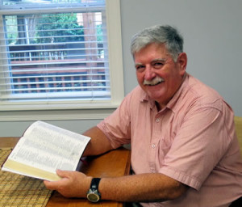

The phrase “sound doctrine” translates Greek terms meaning “healthy teaching”; teaching that promotes the
spiritual health of the listener.
The purpose of the Sound Doctrine broadcast is found in Titus 1:9 – “holding fast the faithful word which is in
accordance with the teaching, that he may be able both to exhort in sound doctrine and to refute those who
contradict.”
It is the mission of Sound Doctrine to communicate systematically the doctrines found in the Bible and identify
erroneous teaching, to the benefit of all who hear.

Rick Hofmeister was born in southwestern Pennsylvania in 1950. He was saved at
the age of ten and attended public
schools until being accepted at Southeastern Bible College, Birmingham AL in 1968.
There he met Shelia Tidwell; they were married in 1971 and blessed with three children through 1977. In the late
‘70s
they were living in northern Alabama, where Rick worked as a forest ranger, and served as chaplain for a jail
ministry. While with the forestry department, he was led of the Lord to return to school in preparation for
pastoral
ministry.
He graduated with a BA in 1990, and an MA degree in 1994. In May of 1990, Rick was called to Grace Bible Church,
Valdosta GA, where he has served as pastor ever since.
Encouraged by church and family, he teaches a Bible class each week at the ACV retirement community in
Dowling Park, FL and began the Sound Doctrine program on WAFT radio, now heard locally at 101.1 FM and worldwide at waft.org.
Pastor Rick is a member of the IFCA International; he and Shelia have six grandchildren.